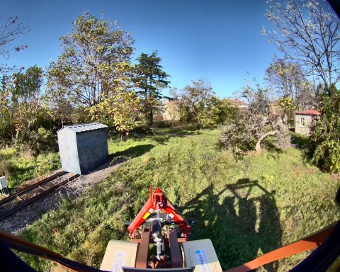
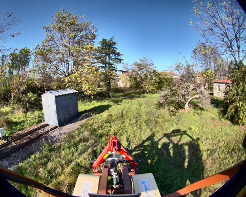
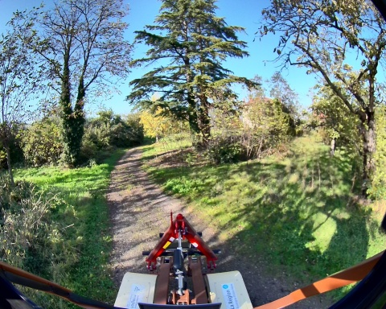
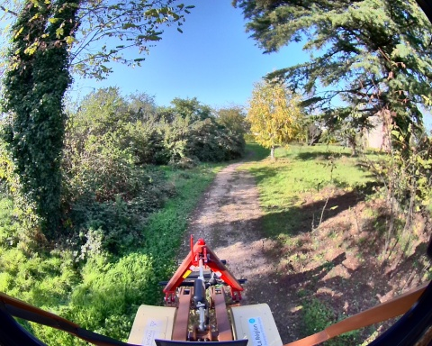
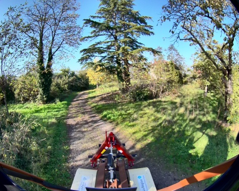
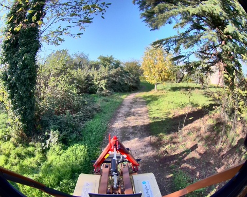
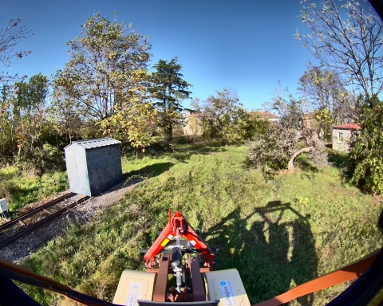
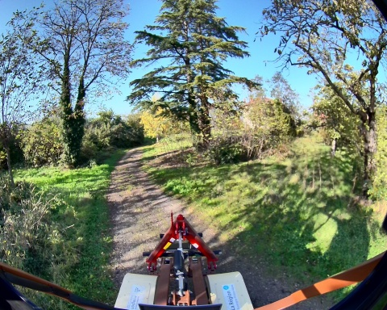
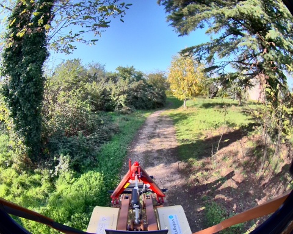

 


Chemin complet : /data/synchro_data/Innodura/Agrivia/Données/2024_bag/loop_2_08_11_2024

Files: loop_2_08_11_2024_0.db3
Bag size: 4.1 GiB
Storage id: sqlite3
Duration: 110.581288743s
Start: Nov 8 2024 14:16:50.922963835 (1731071810.922963835)
End: Nov 8 2024 14:18:41.504252578 (1731071921.504252578)
Messages: 79287
Topic information: Topic: /alpo/base/controller/odom | Type: nav_msgs/msg/Odometry | Count: 994 | Serialization Format: cdr
Topic: /alpo/gps/nmea_sentence | Type: nmea_msgs/msg/Sentence | Count: 15484 | Serialization Format: cdr
Topic: /alpo/gps/fix | Type: sensor_msgs/msg/NavSatFix | Count: 1106 | Serialization Format: cdr
Topic: /alpo/robot_description | Type: std_msgs/msg/String | Count: 1 | Serialization Format: cdr
Topic: /diagnostics | Type: diagnostic_msgs/msg/DiagnosticArray | Count: 390 | Serialization Format: cdr
Topic: /alpo/gps/vel | Type: geometry_msgs/msg/TwistStamped | Count: 1100 | Serialization Format: cdr
Topic: /alpo/joystick/joy | Type: sensor_msgs/msg/Joy | Count: 551 | Serialization Format: cdr
Topic: /rosout | Type: rcl_interfaces/msg/Log | Count: 1212 | Serialization Format: cdr
Topic: /parameter_events | Type: rcl_interfaces/msg/ParameterEvent | Count: 0 | Serialization Format: cdr
Topic: /alpo/imu/velocity | Type: geometry_msgs/msg/TwistStamped | Count: 11058 | Serialization Format: cdr
Topic: /alpo/imu/mag | Type: sensor_msgs/msg/MagneticField | Count: 11058 | Serialization Format: cdr
Topic: /alpo/imu/data | Type: sensor_msgs/msg/Imu | Count: 11058 | Serialization Format: cdr
Topic: /tf_static | Type: tf2_msgs/msg/TFMessage | Count: 6 | Serialization Format: cdr
Topic: /alpo/imu/imu_data_str | Type: std_msgs/msg/String | Count: 11058 | Serialization Format: cdr
Topic: /alpo/lidar/pointcloud_synchro | Type: sensor_msgs/msg/PointCloud2 | Count: 496 | Serialization Format: cdr
Topic: /tf | Type: tf2_msgs/msg/TFMessage | Count: 1735 | Serialization Format: cdr
Topic: /alpo/base/controller/odometry | Type: romea_mobile_base_msgs/msg/OneAxleSteeringMeasureStamped | Count: 995 | Serialization Format: cdr
Topic: /alpo/gps/ntrip/rtcm | Type: mavros_msgs/msg/RTCM | Count: 537 | Serialization Format: cdr
Topic: /alpo/joint_states | Type: sensor_msgs/msg/JointState | Count: 9951 | Serialization Format: cdr
Topic: /alpo/camera/image_synchro | Type: sensor_msgs/msg/Image | Count: 497 | Serialization Format: cdr